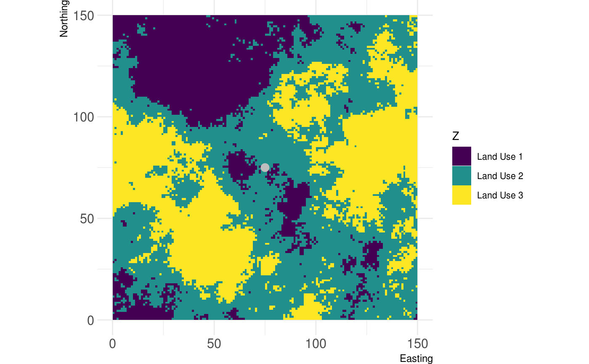
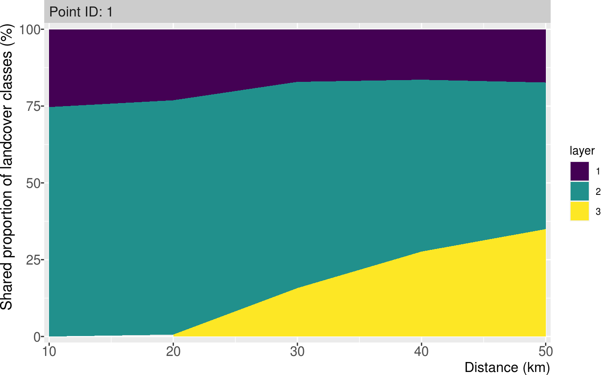
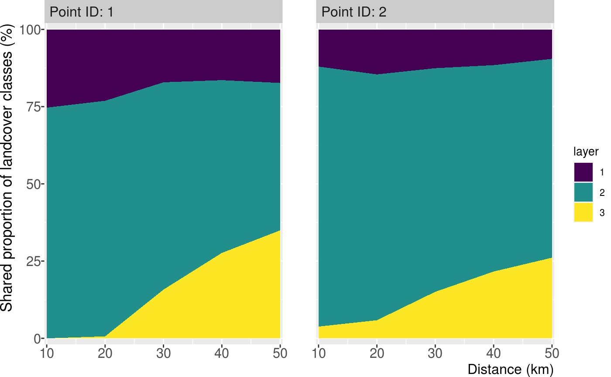

Plot the landscape share in subsequential buffers around a/multiple point(s) of interest
show_shareplot(landscape, points, buffer_width, max_width, return_df = FALSE) show_shareplot(landscape, points, buffer_width, max_width, return_df = FALSE)
| landscape | Raster* object |
|---|---|
| points | Point(s) represented by a two-column matrix or data.frame; SpatialPoints*; SpatialPolygons*; SpatialLines; Extent; a numeric vector representing cell numbers; or sf* POINT object |
| buffer_width | Buffer width in which landscape share is measured |
| max_width | Max distance to which buffer_width is summed up; the x axis in the plot |
| return_df | Logical value indicating if a tibble with the underlying data should be returned |
ggplot2 Object
# create single point new_point = matrix(c(75,75), ncol = 2) # show landscape and point of interest show_landscape(classified_landscape, discrete = TRUE) + ggplot2::geom_point(data = data.frame(x = new_point[,1], y = new_point[,2]), ggplot2::aes(x = x, y = y), col = "grey", size = 3)# show single point share show_shareplot(classified_landscape, new_point, 10, 50)# show multiple points share new_points = matrix(c(75, 110, 75, 30), ncol = 2) show_shareplot(classified_landscape, new_points, 10, 50)# get data frame with results back result <- show_shareplot(classified_landscape, new_points, 10, 50, return_df = TRUE) result$share_df#> # A tibble: 30 x 4 #> id layer freq buffer #> <chr> <fct> <int> <dbl> #> 1 Point ID: 1 1 80 10 #> 2 Point ID: 2 1 38 10 #> 3 Point ID: 1 2 236 10 #> 4 Point ID: 2 2 266 10 #> 5 Point ID: 1 3 0 10 #> 6 Point ID: 2 3 12 10 #> 7 Point ID: 1 1 292 20 #> 8 Point ID: 2 1 184 20 #> 9 Point ID: 1 2 964 20 #> 10 Point ID: 2 2 1006 20 #> # … with 20 more rows